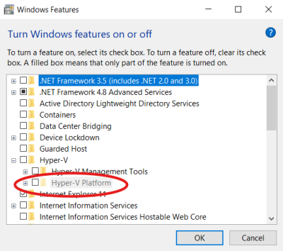
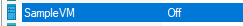
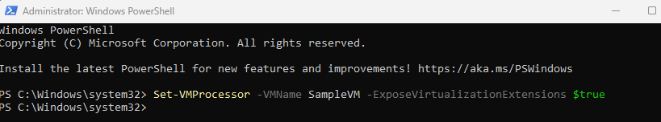
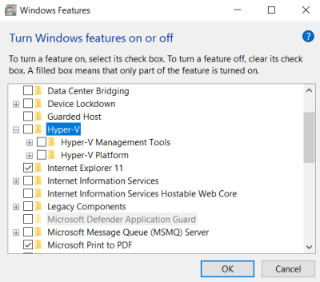

Nested VMs: enabling VMs inside VMs with Hyper-V
To create virtual machines inside a Hyper-V virtual machine, you need to enable processor virtualization features.
The virtual machine needs to be turned off and the following PowerShell command must be issued as an administrator.
Set-VMProcessor -VMName <VMName> -ExposeVirtualizationExtensions $true
where
For example, I created a Hyper-V virtual machine called SampleVM on my host PC. Inside this VM, I want to enable Hyper-V to created nested virtual machines. In the “Turn Windows features on or off”, I get a grayed out option which prevents me from using Hyper-V virtual machines inside SampleVM:

Let's shutdown the virtual machine.

Now, on my host PC, inside a PowerShell console started as an administrator, I issue the following command. As you can see, there is no message whatsoever in case of success:

I can now turn SampleVM back on and I can see that Hyper-V is fully available now:
